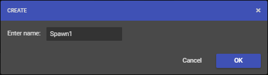
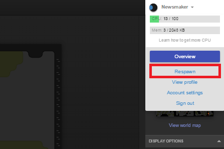
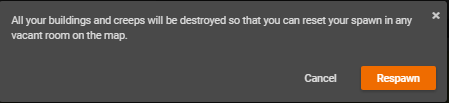

Screeps 是个永无止境的大型战略游戏。由于庞大的玩家数，玩家力压群雄取得绝对性胜利的可能微乎其微。游戏的主旨是在于让玩家得以用其编程本领以一己之力面对挑战、优化代码、改变地貌、建立联盟、攻防变换等。
初生
玩家可以在任意有中立控制器的房间开始游戏，然而我们建议玩家选择有两个能量源的保护区初生。当玩家观察地形并对此房间满意后，便可在此房间点击合适位置里放下 Spawn ：

紧接着此房间会进入20,000 ticks的安全模式 （大约 15 小时，但具体取决于单 tick 的实际耗时）充分利用这段时间来探索房间、规划基建、布置防御、占领资源。
当玩家放下的第一个 Spawn 自动包含 300 能量。 Spawn 每 tick 会自动产出 1 能量，所以玩家不会陷入 Spawn 能量耗尽且无 creep 可用的尴尬局面。
当 Spawn 和其扩展的总储能量达到 300 时， Spawn 会停止产能。
重生
如果玩家对当下的房间布局不满意，或是受到过多其他玩家的威胁，玩家可以选择重生。重生有着 180 秒的冷却时间。一般而言，如果玩家的房间已被敌对势力侵占且没有足够资源背水一战，重生后东山再起也不失大雅。


回顾控制，玩家的全局控制等级（GCL）是只升不降的。所以重生并不会减少玩家所能控制的房间数，比如玩家重生前可控制三个房间，重生后仍可控制三个房间。
在 GCL 许可的条件下多占领房间能有效地推动属地建设。即便重生后一无所有，高 GCL 能让玩家迅速占领多个房间并着手重建。